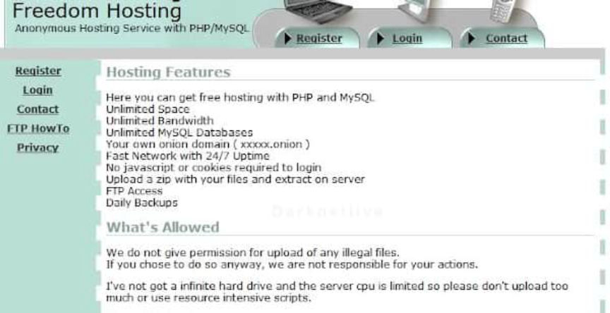
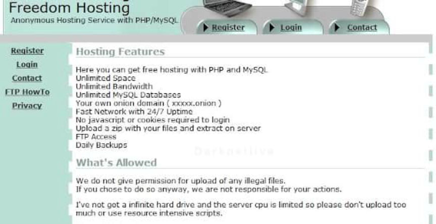

Freedom Hosting Admin Admits Child Pornography Charges
Eric Eoin Marques, the creator and administrator of Freedom Hosting, pleaded guilty to conspiracy to advertise child pornography. Freedom Hosting, at its height, was the largest Tor webhost and the FBI called Marques “the largest facilitator of child porn on the planet.”
Marques admitted operating Freedom Hosting from between 2008 and 2013 until his arrest in Dublin, Ireland. Investigators learned that Marques had helped operate “criminal communities dedicated to the sexual exploitation of children.” He was not a “hands off” administrator and actively participated in the child exploitation forums hosted on Freedom Hosting.

Law enforcement in Ireland arrested Marques after a grand jury had returned an indictment charging him with the following crimes:
Conspiracy to Advertise Child Pornography Conspiracy to Distribute Child Pornography Advertising Child Pornography Distribution of Child Pornography
An example of his active participation and acknowledgement of the illegal forums using Freedom Hosting:
On April 24, 2013, a user of Website A posted a message asking whether the anonymous hosting service (AHS) is free to the end user. On April 25, 2013, the administrator of Website A responded that the AHS is “100% free” and that the administrator assumes that “the admin covers [the cost] himself as a·service to the [Network] pedo community.”
Website A, in this instance, is a reference to one of the largest child exploitation forums at the time. In a similar thread, users of the forum talked about Marques’ additional involvement:
On May 31, 2013, the administrator of Website A replied to a user that claimed, “[AHS] has NO control of the sites it hosts. It only hosts them.” The administrator responded, stating, “In reality [AHS] has full control over all the websites hosted on their servers. In fact, just a few days ago they patched a few of the core files running this very forum.” Later in the same conversation, the administrator noted that, though AHS does not “create or maintain ( as far as I know) any of the sites they are hosting” AHS could “do whatever they wanted with the-sites they host as they inherently have full access to the databases behind the sites.”
Freedom Hosting, in total hosted more than 8.5 million images of child exploitation material, according to an announcement from the Department of Justice. (Marques had little to no involvement in the administration of the majority of the sites hosted by Freedom Hosting. The government focused entirely on child pornography crimes.)
After seizing Freedom Hosting servers, the FBI relaunched the service using servers under their control in Maryland.
On August 1, 2013, some savvy Tor users began noticing that the Freedom Hosting sites were serving a hidden “iframe”—a kind of website within a website. The iframe contained Javascript code that used a Firefox vulnerability to execute instructions on the victim’s computer. The code specifically targeted the version of Firefox used in the Tor Browser Bundle—the easiest way to use Tor.
The compromised server injected an iframe and then injected additional iframes with scripts that checked the vistor’s browser version (See CVE-2013-1690 for more information). If a user’s browser version met the requirements (Firefox 17 on Windows), it would download an infected payload that sent the target’s MAC address and Windows hostname to a server in Virginia controlled by the FBI. This exploit required the use of javascript. And the Tor Browser Bundle shipped with javascript enabled by default.
Marques is scheduled for sentencing on May 11, 2020. He faces a mandatory minimum sentence of 15 years in prison.
Previously: DOJ: Freedom Hosting Admin has been Extradited to the US
h/t @just_some_d00d
Marques admitted operating Freedom Hosting from between 2008 and 2013 until his arrest in Dublin, Ireland. Investigators learned that Marques had helped operate “criminal communities dedicated to the sexual exploitation of children.” He was not a “hands off” administrator and actively participated in the child exploitation forums hosted on Freedom Hosting.

Freedom Hosting homepage
Law enforcement in Ireland arrested Marques after a grand jury had returned an indictment charging him with the following crimes:
An example of his active participation and acknowledgement of the illegal forums using Freedom Hosting:
On April 24, 2013, a user of Website A posted a message asking whether the anonymous hosting service (AHS) is free to the end user. On April 25, 2013, the administrator of Website A responded that the AHS is “100% free” and that the administrator assumes that “the admin covers [the cost] himself as a·service to the [Network] pedo community.”
Website A, in this instance, is a reference to one of the largest child exploitation forums at the time. In a similar thread, users of the forum talked about Marques’ additional involvement:
On May 31, 2013, the administrator of Website A replied to a user that claimed, “[AHS] has NO control of the sites it hosts. It only hosts them.” The administrator responded, stating, “In reality [AHS] has full control over all the websites hosted on their servers. In fact, just a few days ago they patched a few of the core files running this very forum.” Later in the same conversation, the administrator noted that, though AHS does not “create or maintain ( as far as I know) any of the sites they are hosting” AHS could “do whatever they wanted with the-sites they host as they inherently have full access to the databases behind the sites.”
Freedom Hosting, in total hosted more than 8.5 million images of child exploitation material, according to an announcement from the Department of Justice. (Marques had little to no involvement in the administration of the majority of the sites hosted by Freedom Hosting. The government focused entirely on child pornography crimes.)
After seizing Freedom Hosting servers, the FBI relaunched the service using servers under their control in Maryland.
On August 1, 2013, some savvy Tor users began noticing that the Freedom Hosting sites were serving a hidden “iframe”—a kind of website within a website. The iframe contained Javascript code that used a Firefox vulnerability to execute instructions on the victim’s computer. The code specifically targeted the version of Firefox used in the Tor Browser Bundle—the easiest way to use Tor.
The compromised server injected an iframe and then injected additional iframes with scripts that checked the vistor’s browser version (See CVE-2013-1690 for more information). If a user’s browser version met the requirements (Firefox 17 on Windows), it would download an infected payload that sent the target’s MAC address and Windows hostname to a server in Virginia controlled by the FBI. This exploit required the use of javascript. And the Tor Browser Bundle shipped with javascript enabled by default.
Marques is scheduled for sentencing on May 11, 2020. He faces a mandatory minimum sentence of 15 years in prison.
Previously: DOJ: Freedom Hosting Admin has been Extradited to the US
h/t @just_some_d00d